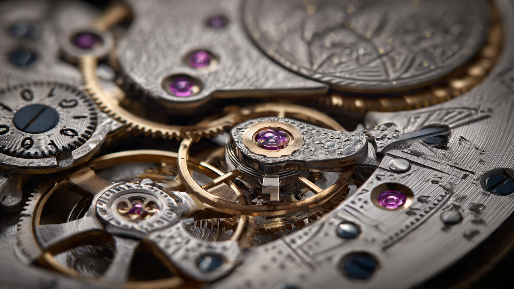

388 Parts to Tell Time in Digits: Engineering the Lange Zeitwerk’s Mechanical Digital Display

Watch hands lie to you, not about the time itself but about what's happening inside the movement. A sweep seconds hand glides in smooth arcs, suggesting effortless continuity, hiding the violent impulse-and-coast cycle of the escapement beneath the illusion of a continuous sweep. Every mechanical watch is actually a digital machine at heart, its balance wheel ticking in discrete oscillations, its escape wheel advancing tooth by tooth, the hands smoothing over the discontinuity so thoroughly that the wearer never suspects the staccato reality beneath.
A. Lange & Söhne’s Zeitwerk refuses to smooth over anything. Introduced in 2009, it tells time through three numeral discs visible through apertures on the dial, jumping forward in crisp one-minute increments with an audible click that announces each transition, with no hands and no pretense of analog continuity. Just numbers, advancing mechanically in the same left-to-right sequence you read on a digital clock, except the mechanism behind them is entirely mechanical, wound by hand, running on a mainspring, and regulated by a balance wheel oscillating at 18,000 beats per hour.
Building it nearly killed the project. Twice.
Why Digital Is Harder Than Analog
A conventional minute hand weighs almost nothing and rotates continuously, advancing one-sixtieth of a revolution per minute through a steady trickle of energy from the going train. At any given moment, the hand is already in motion; the mainspring only needs to keep it moving, not overcome static inertia from a dead stop. A jumping digital display inverts this relationship entirely. For 59 seconds, the disc sits motionless, locked in place. On the sixtieth second, it must rotate precisely 72 degrees (one-fifth of a revolution for the units-minute disc) in a fraction of a second, stop exactly on the next numeral without overshooting, lock again, and hold in silence for another 59 seconds before the cycle repeats.
Consider what this means energetically: a minute hand with a mass of perhaps 20 milligrams rotates at 0.1 degrees per second, requiring microwatts of continuous power, while a Zeitwerk units-minute disc has significantly greater mass and moment of inertia, sits dead still, then must accelerate to peak angular velocity, rotate 72 degrees, decelerate to zero, and lock, all within a window so brief that the human eye perceives the jump as instantaneous. Peak power demand during that fraction-of-a-second transition exceeds the steady-state demand of a conventional movement by orders of magnitude, a burst so violent and so brief that conventional gear-train engineering, designed for the smooth continuous rotation of watch hands, offers no useful precedent for managing it.
Worse: the energy burst cannot come from the mainspring directly, which complicates everything. Mainspring torque varies as the spring unwinds, following Hooke’s law, stronger when fully wound and progressively weaker as the barrel empties. If the discs drew power directly from the mainspring, jumps at full wind would be violent enough to overshoot the target numeral while jumps near the end of the power reserve would be sluggish enough to stall partway through the rotation. A direct-drive digital display would keep different time depending on when you last wound the watch. Unacceptable. Fatally so.
Every serious attempt at a mechanical digital wristwatch has confronted this problem, and most failed spectacularly. Harry Winston's Opus 3, conceived in 2003 by Vianney Halter, took seven years and multiple engineering teams before delivering its first examples, and anecdotal evidence from SJX Watches suggests half the delivered pieces required warranty repairs. F.P. Journe’s Vagabondage III, a more focused design showing hours and seconds digitally, suffered early reliability problems before Journe’s workshop corrected the mechanism. Only Lange’s Zeitwerk reached the market in a well-engineered state and has remained robust in service since its 2009 debut, after a brief period of teething problems in its first year.
How? By solving the energy management problem with a mechanism that has been understood since the 18th century but rarely attempted in a wristwatch: the remontoire d’égalité.
Constant Force: A Spring Within a Spring
George Daniels, the greatest watchmaker of the 20th century, wrote in his book Watchmaking: “The use of the remontoir is by far the best method of smoothing the power supply, but it is complex and costly to make. For this reason, watches with remontoirs are very rare and this, combined with their attractive action, gives them a special place in the affections of the connoisseur of mechanics.” He then added, with characteristic Daniels dryness: “The fact that the mechanism is quite unnecessary merely adds to its charm.”
In the Zeitwerk, the remontoire is not unnecessary. It is the enabling technology. Without it, the entire concept collapses.
A remontoire d’égalité is a secondary spring interposed between the mainspring barrel and the escapement. In conventional use, it smooths out mainspring torque variations to improve timekeeping accuracy. In the Zeitwerk, Lange repurposed it as both a timekeeping regulator and a disc-driving mechanism. Every 60 seconds, the mainspring recharges the remontoire spring through the going train, a process that takes roughly one second, and for the remaining 59 seconds the going train is locked while only the remontoire spring delivers energy to the escapement, providing a consistent, precisely calibrated force to the balance wheel regardless of how wound or unwound the mainspring happens to be.
At the instant the remontoire discharges, two things happen simultaneously: the balance wheel receives its next 60 seconds of regulated energy, and the units-minute disc is driven forward by one position through a driving wheel and pinion on the same arbor as the remontoire mechanism. Because the remontoire spring stores and delivers the same force at every discharge, each disc jump is identical in speed and authority. First jump after winding or last jump before the movement stops: mechanically indistinguishable.
Lange fitted the L043.1 with a massive mainspring relative to the case size, ensuring enough total energy to power both the remontoire recharging and the disc jumps for a minimum of 36 hours. But crucially, a stop-work mechanism halts the movement at the 36-hour mark even though the mainspring still contains residual energy. Below that threshold, the remaining torque might not be sufficient to reliably charge the remontoire, and Lange chose to stop the watch rather than allow it to limp forward with degraded jumps. When the L043.1 runs down, it stops cleanly, with the seconds hand halting at the 60-second position. A small touch, but it signals engineering intent with unmistakable clarity: this movement does not limp along producing sluggish half-jumps as the spring weakens, does not degrade gracefully into approximation the way lesser watches trail off into unreliable timekeeping as their mainspring energy dwindles. Works or stops.
Three Discs on Two Axes
Reading a Zeitwerk is intuitive. Disarmingly so for something this mechanically complex. Hours on the left, minutes on the right, separated by a German silver time bridge that has become the watch’s visual signature and the one design element that immediately identifies a Zeitwerk from across a room. But the mechanical architecture behind that simple display is anything but intuitive.
Minutes are shown by two discs sharing the same axis: a units-minute disc carrying the numerals 0 through 9, and a tens-minute disc carrying 0 through 5. Hours are shown by a separate ring carrying the numerals 1 through 12, rotating on its own axis.
Every 60 seconds, the remontoire drives the units-minute disc forward by 72 degrees (one-fifth of a revolution, since it carries ten numerals displayed through a single aperture showing one-fifth of the disc at a time). At the transition from 9 back to 0, a finger with a jewel on its underside, mounted on a switching staff connected to the units-minute wheel, engages a six-tipped switching star on the tens-minute arbor, advancing the tens disc by 60 degrees (one-sixth of a revolution). So every ten minutes, both discs jump simultaneously. One disc driven directly by the remontoire, the other advanced mechanically by the first.
At the top of the hour, when the tens-minute disc transitions from 5 back to 0, a single-tooth wheel on the tens arbor engages a four-tipped switching star on the intermediate hour wheel, advancing the hour ring by 90 degrees (one-quarter revolution). At this moment, all three display elements jump simultaneously: units minutes from 9 to 0, tens minutes from 5 to 0, and hours from the current hour to the next. Peak energy demand occurs at these hourly transitions, when the remontoire must drive the greatest combined disc inertia in a single discharge cycle.
Between transitions, every disc must remain absolutely stationary, because a numeral display that drifts or wobbles between minutes would be worse than useless; it would signal mechanical incompetence. Lange engineered two separate safeguards. First, the units-minute disc is directly connected to the control pinion of the constant-force escapement, which is immovable outside switching phases by design. No additional lock is needed for that disc. The remontoire itself holds it in place. Second, both the tens-minute arbor and the intermediate hour wheel have positive form-lock safety elements that physically prevent rotation outside the switching phases. Even under external shock, the discs cannot advance or retreat.
Absorbing the Surplus: The Fly Governor
Locking the discs after each jump solves the problem of unwanted motion between transitions, but it doesn’t solve the problem of overshooting during the transition itself. When the remontoire discharges, it releases a burst of energy calibrated to drive the disc exactly one position forward. In practice, manufacturing tolerances, temperature variations, and the simple physics of rotational inertia mean the disc arrives at its target position carrying residual kinetic energy. Without a mechanism to absorb that surplus, the disc would overshoot, rebound, and oscillate around the target position before settling, producing a visible wobble that would be unacceptable in a watch at this price point.
Lange’s solution is a fly governor, a small air-resistance vane that spins rapidly during each switching cycle, converting the surplus kinetic energy into aerodynamic drag, and as the disc approaches its target position, the fly governor bleeds off the excess energy, allowing the disc to arrive cleanly without overshoot or bounce. Mechanical dashpot. It is the simplest element in the movement and perhaps the most essential for the visual effect, because its effectiveness is evident in the crispness of each transition: the numeral appears in its aperture with no visible movement before or after the jump, as though it materialized rather than rotated into place, a visual crispness that separates the Zeitwerk from every other jumping display ever attempted in a mechanical wristwatch and that collectors cite, more than any specification or finishing detail, as the quality that makes the watch feel alive on the wrist.
A Phantom Tick: The 2016 Revision
For seven years, the first-generation L043.1 carried a quirk that divided collectors. Approximately 25 to 30 seconds before each minute transition, the units-minute disc made a tiny perceptible movement. Barely visible, but accompanied by a soft, audible click that announced what was happening inside the movement: arming. The remontoire mechanism cocking itself for the upcoming discharge. Because the first-generation mechanism used a single minute gear directly connected to the disc, any rotation of the gear during arming translated directly into disc movement. Some collectors considered it charming, an audible heartbeat signaling that the mechanism was alive and preparing its next jump, while others found it aesthetically unacceptable and argued that a numeral display should be binary: stationary or jumping, with any intermediate state undermining the precision of the concept.
In 2016, Lange revised the L043.1 with changes that affected 70 to 80 percent of the minutes display mechanism, according to Zeitwerk department head Robert Hoffmann. At the core of the revision was a deceptively simple innovation: replacing the single minute gear with a double-layer gear on the same axis.
In the revised mechanism, the lower gear connects to the remontoire arming mechanism and the upper gear connects to the units-minute disc. A pin in an elongated slot connects the two gears with approximately five degrees of free play. During arming, the lower gear rotates those five degrees as the pin travels along the slot without engaging the upper gear. Disc stays perfectly still. When the remontoire fires and the lower gear rotates for the actual jump, the pin reaches the end of the slot, engages the upper gear, and both rotate together to advance the disc. Five degrees of angular freedom. That is all it took. A pin-and-slot coupling eliminated the phantom tick entirely, proving that what had taken seven years of collector debate to crystallize as a problem took a double-layer gear to solve.
Lange also revised the constant-force mechanism itself. An eccentric cylinder mounted over the seconds wheel replaced the earlier tension spring and ellipse-shaped ruby pin that had triggered the remontoire release. None of the second-generation components can be retrofitted into earlier movements because even the three-quarter plate was redesigned to accommodate the changes, which means the two generations of Zeitwerk are mechanically distinct watches sharing a case shape and a philosophy but separated by an engineering gulf that no service center can bridge with replacement parts. Owners of first-generation Zeitwerks have the phantom tick permanently. Whether that’s a defect or a feature depends entirely on the collector.
Setting the Time: Overriding a Locked Mechanism
Pulling the crown on a conventional watch disengages the winding train and connects the crown to the hand-setting mechanism through a sliding pinion. Simple, proven, universal since the keyless-winding patent of the 1840s. On a Zeitwerk, pulling the crown must do something categorically different: it must override a mechanism that is, by design, locked against rotation.
When the crown is pulled to the setting position, the control lever of the constant-force escapement blocks the entire disc configuration, stopping the movement. An innovative assembly then overrides this blockade. Rather than the classic hand-setting mechanism with its sliding pinion and friction-fit cannon pinion, the Zeitwerk uses a roller that advances across the tips of a contrate hub fixed to the driving wheel. Rotating the crown moves this roller in accurately defined steps along the hub teeth, and each step rotates the driving-wheel arbor by one increment, advancing the display by exactly one minute. Through the sapphire caseback, you can watch the roller hop across the contrate hub teeth as you set the time, a curiously satisfying visual.
Hours cannot be set independently on the original Zeitwerk. To advance from 7:00 to 3:00, you must scroll through every intervening minute, 480 individual steps. Lange addressed this in the 2019 Zeitwerk Date (caliber L043.8) and the 2022 updated Zeitwerk (caliber L043.6) by adding a pusher at four o’clock that advances the hour ring independently, reducing a formerly tedious process to twelve presses at most.
Doubling the Reserve: From 36 to 72 Hours
Miss a day and the watch stops, dead, and for a timepiece that retails at $89,200 in its current generation, this constraint felt unnecessarily punitive to some collectors, even if the engineering rationale was sound. In 2019, with the Zeitwerk Date and its L043.8 caliber, Lange doubled the power reserve to 72 hours through a redesigned barrel system.
Details of the new barrel architecture are limited in publicly available documentation, but A. Lange & Söhne describes it as a “patented barrel design” enabling a “double power reserve.” Lange carried the same 72-hour specification into the 2022 Zeitwerk refresh with the L043.6 caliber, confirming the new barrel as the standard going forward. Seventy-two hours transforms the ownership experience from anxious daily ritual to comfortable three-day window. Wind it Friday morning and it runs through Sunday night. That breathing room matters more than any spec sheet suggests.
Increasing the power reserve without increasing the mainspring torque curve was the constraint. A stronger mainspring would deliver higher peak torque when fully wound, potentially overwhelming the remontoire and causing disc overshoot, while a longer mainspring in a larger barrel would require a larger movement and therefore a larger case. Lange achieved the doubling within the same 41.9 mm case diameter by redesigning the barrel’s internal geometry rather than simply adding more spring, though the precise nature of the patented design has not been disclosed in technical detail sufficient for independent analysis.
Movement Architecture and Finishing
Viewed through the sapphire caseback, the L043.1 is dense, technical, and visually complex in a way that differs markedly from other Lange movements. Most Lange calibers present ordered symmetry: the three-quarter plate, twin jewel-set chatons, hand-engraved balance cock, all arranged in a composition that reads as decorative even while being fully functional. On the Zeitwerk, the architecture reads as engineering first, decoration second.
An anchor-shaped bridge for the constant-force mechanism dominates the view, black-polished to a mirror finish that catches light and draws the eye. Two hand-engraved cocks cover the balance wheel and escape wheel respectively. Screwed gold chatons hold the bearing jewels, each one pressed into its seat with a tolerance measured in single-digit microns and visible through a loupe as a gleaming island of warmth against the German silver terrain of the three-quarter plate. Every edge is beveled, every flat surface finished with appropriate graining or striping, and the overall standard meets or exceeds what any other large manufacture delivers, including the Swiss competition.
SJX Watches, in a detailed comparison of the Zeitwerk against the F.P. Journe Vagabondage III and Harry Winston Opus 3, concluded: “In terms of finishing, it really is no contest. The Zeitwerk wins.” Journe’s movements, while attractive in their red-gold bridges, show inconsistencies under close magnification, and the Opus 3’s finishing was visibly compromised by the decade of engineering rework that preceded delivery. Lange’s dual-assembly process, where every movement is assembled twice (once for inspection, then disassembled, cleaned, and reassembled to final specification), ensures a consistency that independent workshops producing limited quantities cannot reliably match.
Historical Context: 185 Years of Mechanical Digits
Lange did not invent the mechanical digital display. That credit belongs to Austrian engineer Josef Pallweber, who in 1883 patented a disc-based time display read through two windows and licensed it to several brands, IWC most prominently among them. Pallweber pocket watches survive in auction houses today, handsome curiosities with numerals visible through dial apertures, their movements simple enough that a competent watchmaker can service them without consulting a technical drawing, which is precisely the limitation that prevented them from evolving into anything more ambitious.
But Pallweber’s mechanism used dragging displays, where the discs rotated continuously rather than jumping in discrete steps. A dragging display avoids the energy-burst problem entirely because the discs never stop and restart; they simply rotate at the same rate as a conventional minute hand, with their position read through a window. Aesthetically effective but mechanically unambitious, since the display mechanism is functionally identical to a conventional hand on a concealed arbor.
Lange’s own history with digital displays predates the Zeitwerk by more than a century and a half. Ferdinand Adolph Lange’s mentor, Johann Christian Friedrich Gutkaes, built the five-minute digital clock that sits above the stage of the Semper Opera House in Dresden, which opened in 1841. That clock displayed time through two apertures showing hours and five-minute intervals. When Lange introduced the oversized date on the Lange 1 in 1994, the Semper clock was the explicit inspiration. And when Günter Blümlein, the executive who revived Lange, IWC, and Jaeger-LeCoultre in the 1990s, sketched the concept for a digital wristwatch with Pallweber-style display in early 2001, the Semper clock was again the reference point. Blümlein died in October 2001. He never saw the Zeitwerk reach production. Development began formally in 2004 under Anthony de Haas, Lange’s head of development, and the dial layout was the starting constraint: time displayed horizontally, reading left to right, in the same order and visual weight as the Semper clock. Every mechanical decision followed from that aesthetic commitment.
Competition and Survival
Of the three major mechanical digital watches produced in the modern era, only the Zeitwerk can reasonably be called a success by every metric that matters: mechanical reliability, consistent production, and ongoing development.
Harry Winston’s Opus 3, the most ambitious of the three, attempted a full digital display of hours, minutes, date, and a four-second countdown, all driven mechanically. Conceived by Vianney Halter and handed to Renaud & Papi (the complications workshop owned by Audemars Piguet) after Halter departed, the Opus 3 took from 2003 to 2010 to deliver its first completed watches. Of 55 planned pieces, all were eventually delivered by 2014, but the movement remains mechanically erratic. Half broke. According to SJX, three of six examples they tracked required factory warranty repairs. Original retail was approximately 80,000 Swiss francs; the last auction result was 168,750 francs at Phillips in June 2020.
F.P. Journe’s Vagabondage III, completed in 2017 as the final chapter of a trilogy begun in 2004, shows hours and jumping seconds digitally with an analog minute hand. Limited to 69 platinum and 68 gold pieces, it is an elegant and concise construction at just 249 components, achieving a case height under 8 mm that makes it remarkably wearable for a mechanical digital watch. But it suffered from early display-mechanism problems that required correction, and the jumping seconds falter visibly as the power reserve approaches empty, with the disc sliding rather than jumping in the final five or six hours of running time. Retail was 56,000 francs; resale now commands roughly four times that figure.
Against these, the Zeitwerk is the workhorse. Available in current production in white or pink gold at $89,200, reliably robust after a brief post-launch correction period, and continuously developed through the Striking Time (2011), Minute Repeater (2015), Decimal Strike (2017), Zeitwerk Date (2019), Honeygold Lumen (2021), and the 2022 refresh with its doubled power reserve. No other brand has built a comparable program of sustained development around a mechanical digital display.
Limitations Worth Acknowledging
At 41.9 mm in diameter and 12.6 mm thick, the Zeitwerk wears large, and the top-heavy weight distribution means it does not sit as flat on the wrist as its dimensions suggest. Lange cases are excellent in construction, with individually fabricated lugs soldered to the case middle and uniformly high finishing, but the Zeitwerk is not a dress watch and does not pretend to be one. It makes a statement. Whether that statement suits your wrist and wardrobe is a personal calculation.
Even with the 72-hour power reserve of current models, the Zeitwerk demands more attention than most watches at its price. You will wind it, you will hear it click through its transitions, and you will occasionally be reminded that a mechanism this complex exists in a state of controlled tension. For collectors who want a watch they can strap on and forget, this is the wrong choice entirely. For collectors who want to be conscious of the mechanical life on their wrist, who want to hear time passing in discrete audible increments, there is genuinely nothing else like it.
Pre-owned values for standard-production Zeitwerks hover at roughly two-thirds of retail, which is unusual for a Lange complication and reflects the watch’s niche appeal relative to the more universally admired Lange 1 and Datograph. Limited editions, particularly the Luminous “Phantom” and Handwerkskunst, trade well above original retail. Whether the standard model’s secondary-market discount represents an opportunity or a warning depends on whether you believe the watch’s mechanical argument is sufficient to sustain long-term collector interest, or whether it remains too unconventional for the broader market to fully embrace.
388 Parts, 60-Second Intervals
Most watchmakers design movements to be invisible, springs coiling, gears meshing, hands sweeping while the wearer never thinks about what's happening beneath the dial. Lange built the Zeitwerk to make the mechanism's presence undeniable. Every minute, a click that you feel in the wrist before you hear it. Every ten minutes, a louder click as two discs jump simultaneously. Every hour, a cascade of three simultaneous jumps that you can hear across a quiet room.
Seventeen years of continuous production. Eight distinct model variants. Three generations of caliber refinement. A second-generation mechanism redesigned so thoroughly that 70 percent of the display components were replaced to eliminate a barely perceptible tick. And at the core of all of it, a concept so elementary it reads like a contradiction: tell time with numbers, using springs and gears, and make the numbers jump.
Josef Pallweber showed it was possible in 1883. Gutkaes proved the concept in Dresden in 1841. Günter Blümlein sketched it on paper in 2001 and died before the sketch became a movement. Anthony de Haas and his team spent five years turning the sketch into 388 components that jump, lock, discharge, absorb, and jump again, 1,440 times per day, with an audible click each time to prove they did it.
You can hear time pass. That is what 388 parts buy you.
Sources
- A. Lange & Söhne, “Jumping Numerals Mechanism,” alange-soehne.com, official technical description of the Zeitwerk display mechanism.
- A. Lange & Söhne, “Constant-Force Escapement,” alange-soehne.com, technical overview of the remontoire d’égalité.
- SJX Watches, “In-Depth: The Digital Icons – Lange Zeitwerk, F.P. Journe Vagabondage, and Harry Winston Opus 3,” watchesbysjx.com (June 2021).
- Hodinkee, “Technical Perspective: The Where, How, and Why of Constant Force Mechanisms in Watchmaking,” hodinkee.com.
- Hodinkee, “The All-New A. Lange & Söhne Zeitwerk,” hodinkee.com (2022 refresh, L043.6 caliber, 72-hour power reserve).
- Monochrome Watches, “In-Depth: A Complete Guide to the A. Lange & Söhne Zeitwerk,” monochrome-watches.com (full collection history 2009–2022).
- Monochrome Watches, “Review: The A. Lange & Söhne Zeitwerk Date,” monochrome-watches.com (L043.8 caliber, 72-hour power reserve, date complication).
- George Daniels, Watchmaking, Philip Wilson Publishers (remontoire quotation).
- Langepedia, “The Collector’s Guide to A. Lange & Söhne Zeitwerk,” langepedia.com (collection overview, pricing, GPHG Aiguille d’Or).
- Fratello Watches, “Hands-On: A. Lange & Söhne Zeitwerk Date in Pink Gold,” fratellowatches.com (2025 review).